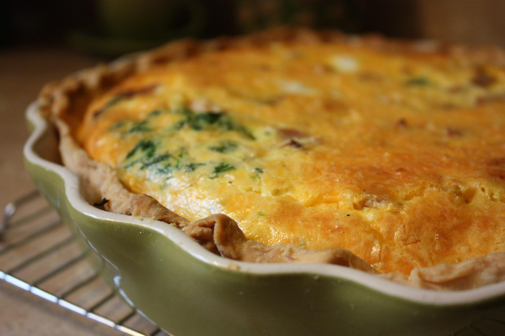
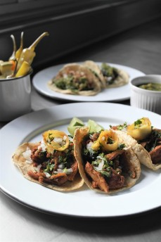
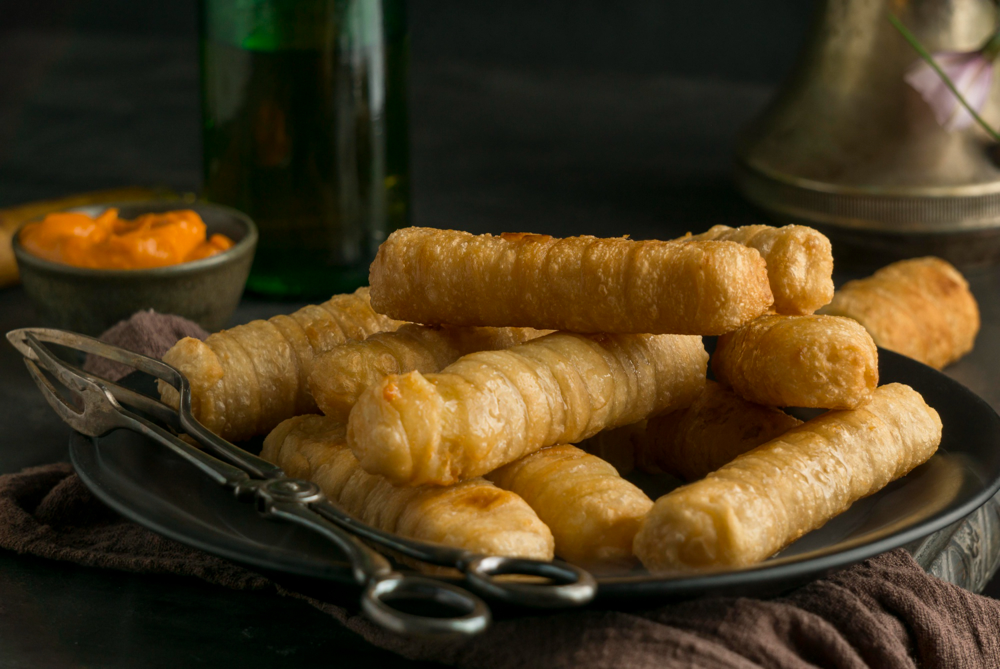
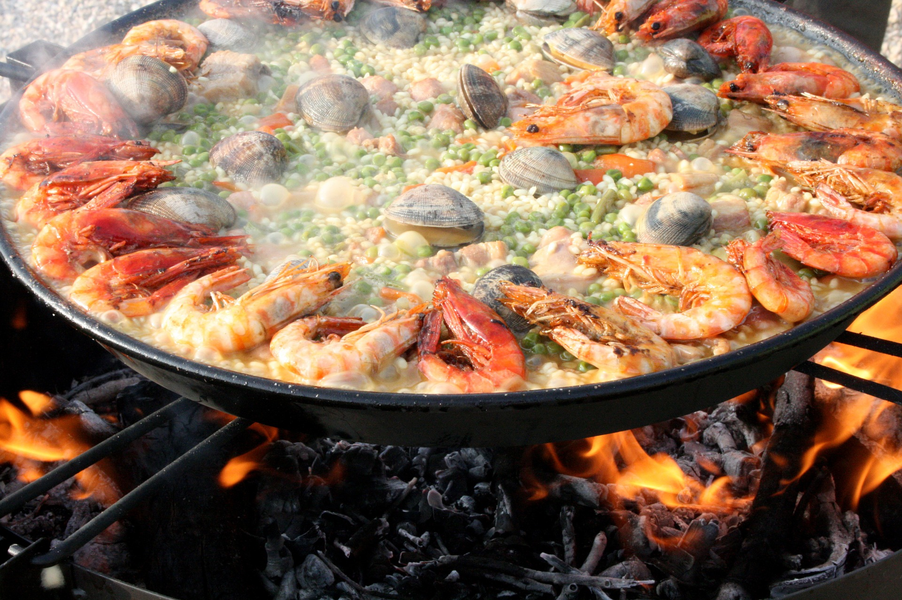
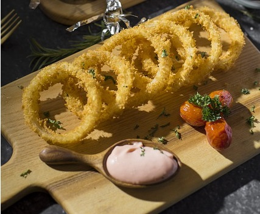

Tarta de Acelga, repollitos y puerros
Te traigo una receta que es muy fácil de preparar, es muy nutritiva, el relleno queda super cremoso y riquísimo, y además es una forma super original de comer acelga.
Tacos al Pastor
Tortilla de maíz rellena con carne de cerdo condimentada con una salsa de especias y chiles secos. Aparte le sumamos anana que le da mucha frescura y personalidad.
Tequeños
Los tequeños son un aperitivo súper tradicional de la cocina venezolana. Unos palitos hechos de harina de trigo y rellenos con un queso duro, llanero.
Salmón al horno con patatas

El salmón al horno es una receta muy equilibrada y sana, apta para toda la familia. Veras cómo les va a gustar esta deliciosa receta de pescado, incluso a los niños.
Paella de Mariscos
Les recomiendo que tengan en cuenta esta receta de arroz con calamares, es una idea hermosa para cocinar algo simple y muy muy rico.
Rabas ó Calamares fritos
Es una opción para cuando se necesita improvisar alguna comida con amigos o para salvar un antojo de algo distinto. Se los super recomiendo.